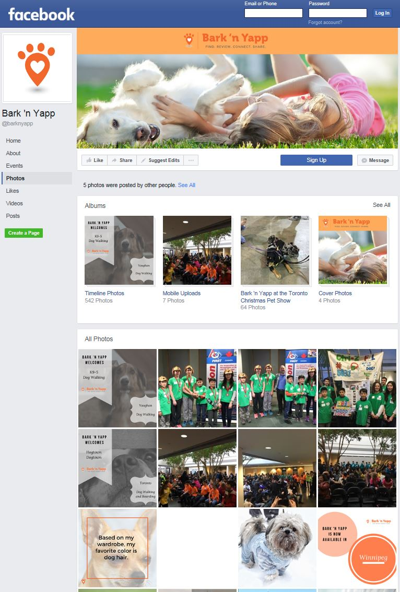

Casey Panning, Community Outreach & Education Coordinator, The Toronto Humane Society
November 24, 2016
- most of the dogs were loud and stressed
- most animals were from owner surrender
- special boxes that look like a viable place to hide can be used to catch loose cats
- Only 1% of a dog's DNA determines appearance
- smaller animals or baby animals are adopted faster
- the third most often scenario in which the THS obtains animals is when people bring in strays
- 3500 animals are brought in every year, 750 of those are strays
- THS is a no-kill facility
- California Humane Society is partnered with them, they transfer animals to each other
- 750 stray animals are brought every year
- They suggested that we meet with dog owners to see what extra features we can add or take away from the Pinder Pet Finder
- There are way more cats in the shelter than there are dogs
- All dogs will have different reactions to senses such as sound, vision, etc.
- There are way more stray cats than dogs so maybe we should either:
(a) make our collar adaptable for various animals, or
(b) create different versions of cats and dogs (flexible e-text display?)
- They liked how cost effective our solution was
- If a stray is found, you can call 311 to get someone to collect the pet.
This takes longer than bringing the pet into the THS but it is safer
- The microchip includes of the owner's contact information. It is the owner's job to update
this information. When their contact information changes, owners often remember to change their
hydro and employment information but not their dog’s information. The microchip gets inserted
into the pet’s skin (Mostly dogs). Then if the pet is lost, the doctor will scan the microchip
and find the information. They will then call the microchip company and find out the phone number of the owner.
- Baby animals get adopted faster than adult animals
- Pit Bulls were banned in Ontario in 2004
- More dogs are surrendered by their owner than they are found stray.
- Less than 1% of a pitbull’s DNA makes up its look
Claudia Vecchio - Founder and Chair of ORA-Organization for the Rescue of Animals
November 29, 2016
Even when people see an assumed lost dog, they are reluctant to go near if it is a big dog.
If people knew that is was fine to approach the dog, they would.
Most people in Ontario will assume that dogs without owners in sight are lost, not stray.
Electromagnetic fields could affect dogs.
MAGNETIC FIELDS and LEY LINES
Can EMFs Shorten Your Dog’s Life?
It can be used only when the owner takes the dog for a walk
Make it easier to put on and off
Magnets?
Arduino does not match the physical Arduino controller being used by the team
Jack Feder, Electrical Engineer, Inventor of Electronic Medical Devices
December 4, 2016
- It is used to test the electronic equipment that generates an electrical signal
by measuring the changing voltage of an electrical signal over time.
- When troubleshooting electronic components, like Arduino, always refer to schematics which are available online
- It is surprising the schematic for Ctrl-Z’s
Cathy Broughton, Local Dog Walker, Cathy Broughton Dog Walking
January 8, 2017
- People spend a fortune on their dogs.
- When a dog is scared, its tail goes down, its ears shut and it runs away.
- She’d pay over $100 for our collar
- Our collar may not be durable enough for a dog’s daily life.
- Our collar may not be durable enough for a dog’s daily life.
- Flashing and noise shouldn’t be too flashy or too loud or else it might spook the dog.
- Reliability is a big part of why people purchase certain products for their dogs.
- People will notice the flashing text.
- Normally dogs are running. It is assumed that the owner is with it because you can’t tell if it is a lost dog.
With our collar, no assumptions are necessary because it is clear that it is lost.
- If we make it too cheap people might think that it is bad quality.
- In order to read the contact information off normal dog collar tags, you have to get right up to the dog to read it.
Sometimes the dog is scared with people coming up close to it. It will start jumping around so the identification can not be read.
With our dog collar, you don’t have to get right next to the dog to get the identification.
With our collar you can see the contact information from far away and then contact the owner.
- The owner can spend several hundred dollars a month on food
Galen Udell, Founder of The Company Bark ‘N Yapp
January 9, 2017
- Was very impressed with our product
- Most of North America is compassionate towards dogs
- An app would be expensive for us to support and develop
- Make it for many platforms (IOS, ANDROID)
- A lot of dogs are scared of people or are skittish
- He really likes the idea of having the LED display and the laser projection because then it solves the problem of people having to go up right next to the dog
- Toronto is a very sensitive and friendly towards lost/stray dogs
- Suggests something to notify owner when collar strap is broken
- App is not a negative, people are used to having an app
- The app is expensive for the users
- Get a lot of market data for your project
- There is a product fairly similar but for horses and now they are trying to make it for dogs but it does not have many of the features that our product has

Rosemary Muccilli, Franchisee of Global Pet Foods in North Toronto
March 23, 2017
- The final product should be all black
- Add reflective material to Pinder
- Make sure that the collar buckle is very solid and won’t break apart
- Make special batteries for the Pinder so that we get more annual revenue
- Make the Pinder able to attach to harnesses for small dogs (for this point make multiple versions or make one that is adaptable).
- A concern is dogs with hair that is long enough to cover the screen.
- She feels that the price of $49.99 is too low and that we could sell this for $120.00
- People come to her store asking for pet trackers but she does not supply them.
- Once the Pinder is finished, she would sell them at her store.
- Make sure the Pinder is light enough for 2lb dogs to carry (harness idea would solve this)
- She thought this is a very viable idea that can be made very successful.
Pegmatis Inc. - Contract Manufacturer
April 11, 2017
On April 11, 2017 Ctrl-Z members visited Pegmatis Inc., which
is a tech startup located in Burlington, Ontario, Canada that brings product ideas to life using its team of seasoned experts in software, hardware and system
design. Ron Cassar (software management), Ed Becze (System
and ME Architecture), Mike Flynn (Architecture and System Validation), David Reeves (Test Architecture), Steve Miao (EE Architecture), Calvin Curry (Manufacturing Engineering), and James Ball (System Architecture and RF / Wireless Architecture) are the founders
of the company. Each engineer with their own unique skillset informed us about the different aspects of bringing the Pinder to life.
Ron Cassar: Business Aspects
- Find the hard parts and problems early on, and solve them early on
-By the end there will be less problems to solve
- When manufacturing in Asia, many parts used in North America will not be available
- Product definition
-Determine the functions of the product clearly
James Ball and Steve Miao: Electrical
- ALLPCB.com is a website to get PCB’s made for a good price
-$10-15 for 2-layer PCB
- Software for PCB design
-Eagle
-Circuit Maker (an online service)
- When buying individual chips, make sure the proper firmware is loaded onto those
chips
-Bluetooth
-Arduino (can be bootloaded easily but Bluetooth cannot be)
- Battery charging chips are available
-Check with Texas Instruments
- We would use a cell phone speaker
- Charging would not be by USB
-We can have two leads on the bottom of the Pinder with a stand
- It could cost up to $1 million to develop Pinder
- Certification for bringing to market:
-RF (radio frequency)
-Laser
-Batteries
- Using pre-made modules makes certification a lot easier
- Battery life
-Most current is drawn by LED matrix (about 15 mA per LED)
-To save battery, we could consider using a piezo instead of a speaker
-We can also decrease the screen brightness with a current limiting resistor
- Element14 offers parts libraries for PCB design
- DIGIKEY supplies many parts
- CNC manufacturing for plastic prototype is fast and easy
Calvin Curry: Mechanical Design
- Know the requirements very well
-Waterproofing
-Temperatures
-Oils from skin/creams
-These will all affect the design
- Waterproofing
-O-ring with screws
- Screws
-Have brass female insert so it does not wear out
- Tolerance
-Leave wiggle room
- Speakers
-Fabric can be exposed to waterproof
-Make sure there is a tight seal between the fabric and the speaker housing
- Buttons
-We need to try many types to get the right feel
- Dog’s neck
-Make the button stiff enough so the dog does not trigger it
-Pressure snap mechanism so if there is too much pressure (if the dog gets stuck
somewhere) the collar will not choke the dog
-Read about legal restrictions
- Add amplifier to make louder speaker
- Bluetooth
-Range could decrease from dog because dogs are mostly water, and the H2O molecules
interfere with the 2.4 gHz signals
-Figuring out the antenna
- Having a dedicated team each with their own skills is really important
-Electrical
-Software
-Mechanical
-Manufacturing
-Financial
-Marketing etc.
- For laser lens, contact the people who make it for the Dollarama laser
- No sharp edges on product
- We need to be able to service it
-Take out battery
-Repairs
- CAD software
-Solidworks (easiest)
-Inventor (autodesk)
-Creo Parametric 3.0
-Siemens NX